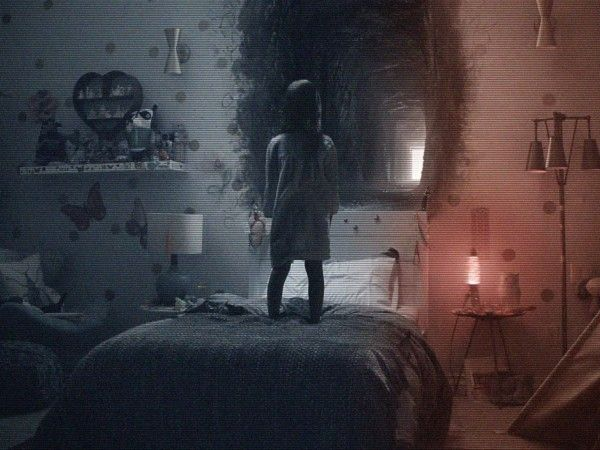
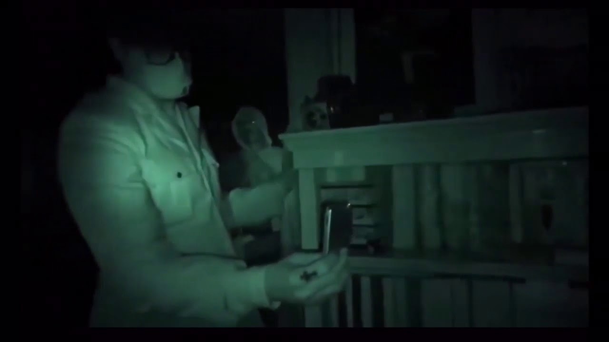
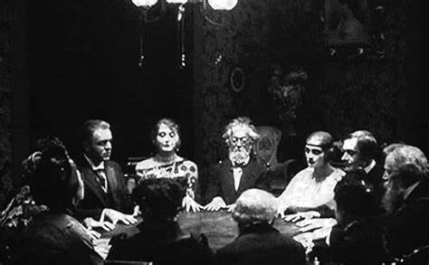

Throughout history, scientists and researchers have tried to explain paranormal phenomena using scientific theories and real-life experiments. Some believe that ghosts, apparitions, and supernatural occurrences are merely psychological or environmental illusions, while others propose that these experiences are deeply rooted in science. Paranormal events have been recorded across various cultures, with consistent patterns of hauntings, spectral visions, and unexplained energies. This has led scientists to investigate whether these events are linked to scientific principles yet to be fully understood.
Despite skepticism, there have been numerous cases where individuals have experienced what they claim to be ghostly encounters. These encounters often involve temperature drops, strange noises, or objects moving on their own. Skeptics argue that these are due to psychological priming, while believers suggest that there may be forces beyond human comprehension. With advancing technology, researchers have been able to record, analyze, and attempt to decipher these unexplained events, leading to various hypotheses.
Scientific Theories on Paranormal Phenomena
Quantum Consciousness Theory
This theory suggests that consciousness is linked to quantum mechanics, explaining ghostly apparitions as quantum energy traces. Some physicists propose that our consciousness exists in a quantum state that does not fully dissipate upon death but instead lingers in the form of energy. This could explain why some individuals claim to see spirits or experience paranormal activity in areas where traumatic events have occurred.
Electromagnetic Field Hypothesis
Strong electromagnetic fields can cause hallucinations, possibly explaining ghost sightings in certain locations. Scientists have discovered that specific frequencies can interfere with human perception, creating an illusion of shadows, voices, or eerie sensations. Some believe that naturally occurring electromagnetic fluctuations in old buildings or near underground water sources may contribute to the perception of hauntings.

Multiverse & Parallel Dimensions
Some physicists believe that interactions with parallel dimensions may explain ghostly encounters and supernatural activities. The idea of multiple dimensions overlapping could provide a logical framework for why some individuals report seeing apparitions that seem to disappear suddenly. If different planes of reality momentarily intersect, it might result in brief but vivid paranormal experiences.
Real-Life Paranormal Experiments
The Philip Experiment (1972)
Scientists in Toronto attempted to create a ghost through collective imagination, and they reportedly succeeded in generating paranormal activity. This experiment demonstrated how belief and suggestion could manifest seemingly supernatural occurrences, suggesting that some hauntings might be products of the human mind rather than actual ghosts.
EVP (Electronic Voice Phenomena)

Researchers recorded unexplained voices using audio devices, suggesting possible communication with spirits. These recordings often contain indistinct whispers or phrases that seem to respond to questions. While skeptics argue that these are radio interferences or psychological priming, others believe it provides compelling evidence of spectral communication.

The Scole Experiment
In this experiment, a group of researchers reported receiving messages and images from spirits through unexplained means. Conducted under controlled conditions, the study presented photographic anomalies, cryptic writings, and unexplainable light phenomena. Though controversial, it remains one of the most extensively documented paranormal experiments.